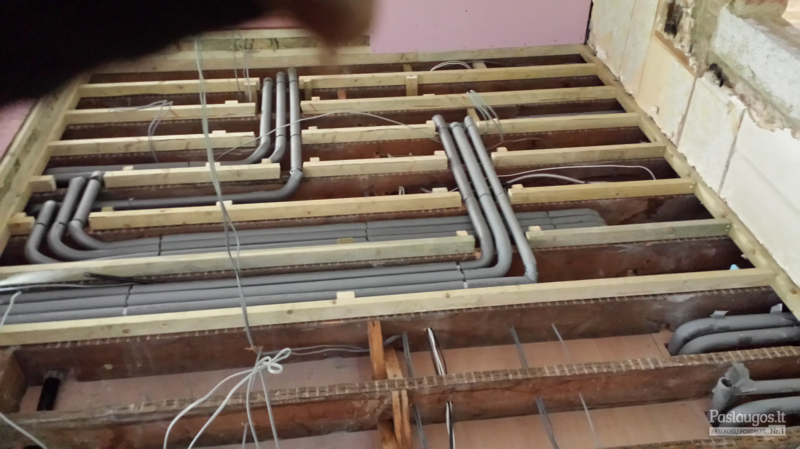

282 SANTECHNIKAI, SANTECHNIKOS DARBAI: 2020 m. kainos
 Prisijungti Reklamuoti paslaugas Prisijungti Reklamuoti paslaugas Gerindami Paslaugos.lt paslaugų kokybę naudojame slapukus. Naršydami toliau, jūs sutinkate su slapukais. Tai galite atšaukti, pakeisdami nustatymus. Plačiau privatumo politikoje . × Paslaugos.lt Statybos, apdaila Santechnikai, santechnikos darbaiSantechnikai, santechnikos darbai
(282)Užklausos (1804)
2020 m. kainos
Lankytojų pask. 30 d. 6 566 (+68%) Viso per 2020 m. 56 731 (+77%)Santechnikas į namus
(90)Smulkūs santechnikos darbai
(131)Kanalizacijos valymas
(50)Šildymo sistemų montavimas
(128)Vandentiekio, kanalizacijos įrengimas
(111)Skalbimo mašinos pajungimas
(126)Vėdinimo sistemų montavimas
(113)Santechnikos sistemų, vamzdynų remontas
(105)Indaplovės pajungimas
(94)Boilerio pajungimas
(90)Džiovyklės pajungimas
(82)Šilumos siurblių montavimas
(82)Šildomų grindų įrengimas
(81)Ventiliacija, vėdinimo sistemos
(63)Šildymo sistemų projektavimas
(63) Rodyti daugiau »Boilerių remontas, valymas
(48)Lietaus nuotekų tinklų montavimas
(41)Vamzdynų, mazgų virinimas
(40)Drenažo vamzdžių montavimas
(39)Inžinerinių tinklų įrengimas
(33)Dujinių katilų remontas
(30)Geoterminis šildymas
(30)Šulinių valymas
(19)Dujų įvedimas, pajungimas
(12)Katilų montavimas, remontas
(10)Šulinių remontas
(9)Vonios restauravimas
(3) Gauk santechnikų pasiūlymus Apdorota 86 088 užklausų. 🥇Išsirink tinkamiausią. ⏱️Sutaupyk laiko. Vilnius (169) Kaunas (131) Panevėžys (99) Klaipėda (95) Alytus (94) Šiauliai (90) Trakų r. (168) Vilniaus r. (158) Elektrėnų sav. (154) Jonavos r. (142) Prienų r. (139) Šalčininkų r. (139) Birštonas (139) Kaišiadorių r. (138) Širvintų r. (129) Ukmergės r. (129) Kauno r. (119) Utenos r. (116) Molėtų r. (114) Švenčionių r. (110) Varėnos r. (110) Kazlų Rūda (106) Kėdainių r. (100) Raseinių r. (99) Panevėžio r. (98) Šakių r. (97) Jurbarko r. (96) Pakruojo r. (96) Radviliškio r. (94) Alytaus r. (93) Marijampolė (93) Vilkaviškio r. (92) Kretingos r. (91) Pasvalio r. (91) Kalvarija (91) Klaipėdos r. (90) Palanga (90) Plungės r. (89) Telšių r. (89) Kupiškio r. (88) Šiaulių r. (86) Anykščių r. (85) Rietavas (85) Joniškio r. (84) Rokiškio r. (84) Šilalės r. (84) Pagėgiai (84) Šilutės r. (83) Kelmės r. (81) Tauragės r. (80) Ignalinos r. (78) Lazdijų r. (78) Zarasų r. (78) Druskininkų sav. (78) Biržų r. (77) Skuodo r. (77) Neringos sav. (75) Mažeikių r. (74) Akmenės r. (73) Visaginas (72) Mažiausias įkainis Didžiausias įkainis Daugiausia rekomend. Daugiausia patirties Daugiausia pavyzdžių Filtrai Kategorijos Kainos nuo 10-20 €/h vid. 15 €/h Santechnikai, santechnikos darbai 2 -20% šiandien 10 €/h 53 8 rekomendacijos 11 m. patirtisSmulkus santechnikos darbai
Paulius Kaunas , +100 km aplink Ventiliacija, vėdinimo sistemos 2 -10% šiandien 30 €/h 25 3 rekomendacijos 7 m. patirtis
Kondicionavimo, šildymo, ventiliacija irmontavimas
Oro kondicionieriai, oras-oras šilumos siurbliai, oras-vanduo šilumos siurbliai, dujiniai katilai, rekuperacinės sistemos, vėdinimo įranga.
UAB SP Industries Kaunas , visa Lietuva Santechnikai, santechnikos darbai 2 -20% šiandien 15 €/h 39 3 rekomendacijos 15 m. patirtisŠvok sistemų įrengimas, bei įranga
MB Santechnikai Kaune Kaunas , +100 km aplink Santechnikai, santechnikos darbai 2 -10% šiandien 10 €/h 20 0 rekomendacijų 13 m. patirtis
Santechnikos darbai, šildymas Oras-vanduo. Klaipėda, Palanga
Santechnikos montavimo darbai, oras-vanduo, oras-oras šilumos siurbliai, šildymo, vėdinimo, kondicionavimo įrengimas Vakarų Lietuvoje. Saulės kolektoriai, vėjo jėgainės 2kW Garantinis servisas.
ŠILUMOS SPRENDIMŲ CENTRAS, UAB Klaipėda , +50 km aplink Santechnikai, santechnikos darbai 2 -10% prieš 8 d. € 16 0 rekomendacijų 21 m. patirtisSantechnikos paslaugos Kaune
Santechnikos darbai su 5 m. garantija
Andrius Kaunas , +50 km aplink Santechnikai, santechnikos darbai 1 -10% vakar 15 €/h 112 17 rekomendacijų 11 m. patirtis"Mano santechnikas"
"Mano Santechnikas" - tai asmeninis santechnikas, kurio Jūs nusipelnėte.
Vytautas Bartušis Vilnius , +30 km aplink Santechnikai, santechnikos darbai 1 vakar 25 €/h 173 9 rekomendacijos 23 m. patirtisSantechnikos paslaugos Kaune
Kvalifikuotai atlieku visus santechnikos, o taip pat suvirinimo darbus. Geras santechnikas Kaune, atestuotas santechnikas Kaune, kokybiški santechnikos darbai Kaune.
Justinas Kaunas , +50 km aplink Ventiliacija, vėdinimo sistemos 1 -10% šiandien 10 €/h 91 10 rekomendacijų 11 m. patirtisRekuperacijos-vėdinimo įrengimas
Kazimieras Vilnius , +100 km aplink Gauk santechnikų pasiūlymus 🥇Išsirink tinkamiausią. ⏱️Sutaupyk laiko. Santechnikai, santechnikos darbai 1 -10% šiandien 20 €/h 75 13 rekomendacijų 6 m. patirtis
Santechnikos darbai
Pavelas Vilnius , +100 km aplink Santechnikai, santechnikos darbai 1 -20% prieš 2 d. 10 €/h 17 19 rekomendacijų 25 m. patirtis
Santechnikas į namus Kaune
Atestuoto santechniko paslaugos Kaune ir Kauno rajone. Nuo nemokamo patarimo iki darbų atlikimo. Atlieku visus santechnikos darbus ir labai mažus, ir didesnius.
Vilius Trainys Kaunas , +30 km aplink Santechnikai, santechnikos darbai 1 -20% šiandien 13 €/h 64 4 rekomendacijos 19 m. patirtisSantechnikos paslaugos Kaune
Santechnikas Kaunas. Santechnikos meistras Kaunas. Santechnika Kaunas. Santechnikas Kaune. Santechniko paslaugos Kaunas. Santechnikas į namus Kaunas. Santechnikos darbai Kaunas. Geras santechnikas
Dainius Kaunas , +30 km aplink Santechnikai, santechnikos darbai 1 -20% prieš 2 d. 10 €/h 72 3 rekomendacijosSantechnikos darbai
Kokybiškai atlieku santechnikos darbus. Konsultuoju, sudarau samatą, taikau nuolaidas. Esu be žalingų įpročių.
Darius Klaipėda , +100 km aplink Santechnikai, santechnikos darbai 1 -5% vakar 20 €/h 22 3 rekomendacijos 11 m. patirtisMb "Santechis"
Santechnika Kaunas , +30 km aplink Katilų montavimas, remontas 1 -10% vakar 10 €/h 31 0 rekomendacijų 16 m. patirtis
Dujų įvedimas,dujotiekių montavimas,dujų pajungimas
Montuojame dujotiekius, pajunginejame dujos. Projektuojame dujinius įvadus. Katilinių įrengimas. Visu dujinių katilų remontas.
Visų katilų remontas Vilnius , visa Lietuva Ventiliacija, vėdinimo sistemos 1 šiandien 21 €/h 21 1 rekomendacijaOro kondicionieriai, šilumos siurbliai
Alexander Vilnius , visa Lietuva Santechnikai, santechnikos darbai 1 -10% vakar € 33 0 rekomendacijų 31 m. patirtis
Vamzdynų Atkimšimas/ Valymas profesionalia įranga.remontas.
Santechniko paslaugos Kaune.
Rokas Kaunas , +200 km aplink Santechnikai, santechnikos darbai 1 -10% šiandien 35 €/h 20 0 rekomendacijų 6 m. patirtisŠilumos siurbliai, dujų katilai pardavimas ir montavimas
Panasonic, Rotex, Bosh, Atlantic, Vaillant, Gree šilumos siurbliai oras-vanduo. Galime pasiūlyti platų, įvairios galios ir techninių parametrų šilumos siurblių pasirinkimą. Ir jų montavimas.
UAB SP Industries Kaunas , +200 km aplink Santechnikai, santechnikos darbai 1 -10% šiandien € 18 0 rekomendacijų 11 m. patirtisVandentiekio, Nuotekų tinklų įrengimas
Atliekame nuotekų, vandentiekio prijungimo darbus, montuojame buitinius valymo įrenginius bei įrenginėjame lietaus kanalizaciją. Visas medžiagas parūpinam mes. Sąmatas sudarom nemokamai.
Robverta Vilnius , +50 km aplink Dujų įvedimas, pajungimas 1 vakar 20 €/h 14 0 rekomendacijųDujų įvedimas,dujotiekių montavimas,dujų pajungimas
Visa konsultacija telefonu 868541906
Inžinerijos slėnis Vilnius , visa Lietuva Ventiliacija, vėdinimo sistemos 1 šiandien € 14 0 rekomendacijųVėdinimo ir kondicionavimo sistemų montavimas
MB Starvijuka Šiauliai , visa Lietuva 1 2 3 … 15 Toliau Populiariausi miestai Santechnikai, santechnikos darbai Vilniuje Santechnikai, santechnikos darbai Kaune Santechnikai, santechnikos darbai Panevėžyje Santechnikai, santechnikos darbai Klaipėdoje Santechnikai, santechnikos darbai Alytuje Santechnikai, santechnikos darbai Šiauliuose Susijusios kategorijos Vidaus apdailos darbai Architektai, projektavimas Stogų dengimas, stogdengiai Elektrikai, elektros darbai Aplinkos tvarkymas, apželdinimas Medžio darbai, staliai Metalo gaminiai, suvirintojai Žemės kasimas, lyginimas Buto remontas [nuo A iki Ž]: kainos, darbai, medžiagos, meistrai 2019-05-27 Populiarios paieškos santechnikas sildymas vandentiekis santechnikos darbai santechnika kanalizacija nuotekos santechnikas vilniuje silumos siurbliai grindinis sildymas oras vanduo vedinimas Rinktis iš sąrašo × Siųsk užklausą 1. Aprašyk savo poreikį 2. Gauk pasiūlymus 3. Išsirink tinkamiausią D.U.K. Taisyklės Privatumo politika Apie mus Blogas Kontaktai Facebook Instagram Struktūra Kategorijos Paslaugų teikėjams Klausk profesionalų
Copyright © UAB „Diginet LTU“, 2012-2020. Visos teisės saugomos.
D I G I N E T Aruodas.lt Autoplius.lt Cvbankas.lt Kainos.lt NTzemelapis.lt Paslaugos.lt Skelbiu.lt